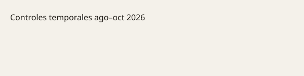

España · Italia · Schengen · 22 de octubre de 2026
España e Italia acuerdan no prorrogar los controles fronterizos recíprocos impuestos tras la crisis migratoria de Ceuta.

Lo que coinciden las redacciones
El 22 de octubre de 2026 los ministerios del Interior de España e Italia confirmaron que no se renovarán los controles recíprocos en aeropuertos y puertos que estaban en vigor desde agosto. La decisión fue tomada tras una conversación telefónica entre Fernando Grande-Marlaska y Matteo Piantedosi, programada después del encuentro entre Pedro Sánchez y Giorgia Meloni al margen del Consejo Europeo. Ambos gobiernos anuncian que la medida irá acompañada de un refuerzo del intercambio de información para garantizar la seguridad del espacio Schengen. El comisario europeo de Interior, Magnus Brunner, saludó el acuerdo.
Lo que es solo un anuncio
Las cifras de entradas irregulares en Ceuta a finales de julio oscilan entre “más de 70.000” y “más de 80.000” según las fuentes. El acuerdo de no prorrogar los controles es un anuncio oficial; no incluye una evaluación pública e independiente de si la amenaza residual ha desaparecido. El refuerzo del intercambio de información es una promesa de procedimiento, no un resultado ya medido.
Contexto que el lector necesita
El espacio Schengen permite la libre circulación entre la mayoría de los Estados miembros. Los controles temporales en fronteras interiores se permiten por razones de seguridad o de orden público y deben ser proporcionados y limitados en el tiempo. Italia impuso controles a pasajeros procedentes de España tras la crisis de Ceuta; España respondió de forma recíproca. La tensión diplomática duró aproximadamente dos meses. El levantamiento restaura el régimen ordinario de Schengen entre los dos países, sujeto a la vigilancia habitual de las fronteras exteriores y al intercambio de datos policiales.
Lo que la historia no es
No es la desaparición de la migración irregular. No es una evaluación de la política migratoria de ninguno de los dos gobiernos. No sustituye los datos de Frontex ni los informes posteriores sobre el funcionamiento del intercambio de información.
